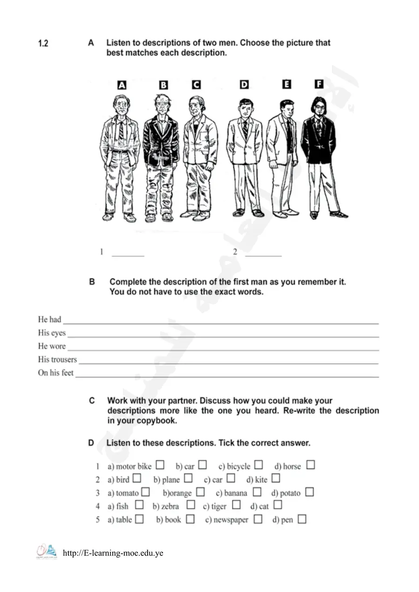

1.2 Listening and describing (Workbook) A Listen to descriptions of two men. Choose the picture that best matches each description.
B Complete the description of the first man as you remember it. You do not have to use the exact words. He had ______. His eyes ______. He wore ______. His trousers ______. On his feet ______. C Work with your partner. Discuss how you could make your descriptions more like the one you heard. Re-write the description in your copybook. D Listen to these descriptions. Tick the correct answer. 1 a) motor bike b) car c) bicycle d) horse 2 a) bird b) plane c) car d) kite 3 a) tomato b)orange c) banana d) potato 4 a) fish b) zebra c) tiger d) cat 5 a) table b) book c) newspaper d) pen
b)orange دون مسافة بعد القوس في الفقرة 3 من كتاب التمارين المطبوع ص 2، وأُبقيت كما هي التزاماً بالأمانة.E Think of two objects. In your copybooks, write descriptions similar to those you heard on the cassette.
[
{
"label_ar": "1) الشعر/الرأس (He had ...)",
"placeholder": "He had dark hair and wore glasses."
},
{
"label_ar": "2) العيون والملامح (His eyes ...)",
"placeholder": "His eyes were dark and serious."
},
{
"label_ar": "3) الملابس العلوية (He wore ...)",
"placeholder": "He wore a dark jacket, a light shirt and a tie."
},
{
"label_ar": "4) البنطال (His trousers ...)",
"placeholder": "His trousers were light-coloured and straight."
},
{
"label_ar": "5) الحذاء (On his feet ...)",
"placeholder": "On his feet he wore dark shoes."
}
]{
"wb_ocr_vs_image": "طُوبق النص مع tesseract.js eng و3 شرائح أفقية لصفحة WB PDF ص 3–4 (كتاب ص 2–3). سُجّل غياب نص الشريط السماعي في REVIEW_NEEDED.md، كما حُفظت الصيغة الحرفية b)orange."
}